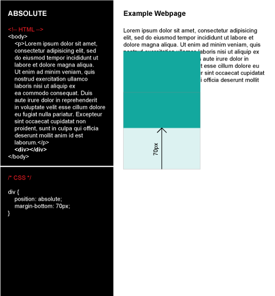

CSS Positioning
What are the differences between static, absolute, fixed, and relative positioning?
CSS allows us to control the positioning of HTML elements, which is extremely important to customizing the layout of our webpages. There are four types of positioning attributes: static, absolute, fixed, and relative.
- Static
If none of the above attributes are specified, the default value (static) will be used, meaning the element will appear on the webpage based on its position in the HTML. It will appear within the normal flow of all elements.
Example:
- Absolute
An element with absolute positioning will move in relation to the first parent element that is not static. If none, it will be positioned in relation to <html> (the entire webpage). In addition, elements with absolute positioning are removed from the flow of your HTML; they do not affect and are not affected by other elements on the page. Imagine a photo that sits behind all other text - the text will appear over the image without breaking. On the other hand, a photo that sits in front of all other text will cover the text directly behind it but the characters will not break to surround the image. In this case, all the other elements will act as if the photo is not even there.
Example:
 - Fixed
An element with a fixed position will stay in its specified location. So, as you scroll up and down on the webpage, that element will appear glued to one spot on the browser screen. One might assume most headers and navigation bars will have a fixed position so that a user can always have easy access to other pages on the site. For example, Gmail's inbox has a fixed header and left sidebar, which host a search bar, as well as commonly used tools and folders (i.e. reply/delete/compose or inbox/starred/sent).
Example:
- Relative
An element with relative positioning will move in relation to itself. You must assign another positioning attribute, such as top/bottom/left/right, to elicit an effect. For example, an element with only position: relative will stay in the same spot. However, defining both position: relative and left: 10px will move the element 10px to the right of its original position.
Example:
Additional positioning attributes, such as top/bottom/left/right, can and should be used with the above positioning types, aside from static since it's just the default value. These supplemental attributes accept a pixel or percentage amount to specify how far up/down/left/right the element should be moved. Don't forget that the element will move in relation to other elements, the webpage, or even itself based on the position type.